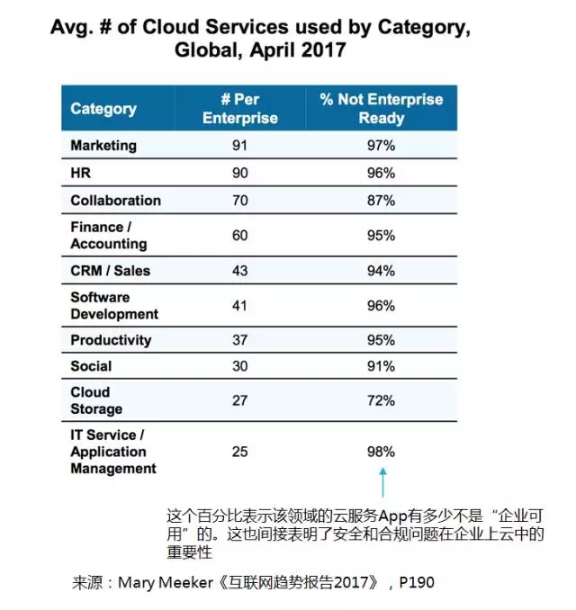
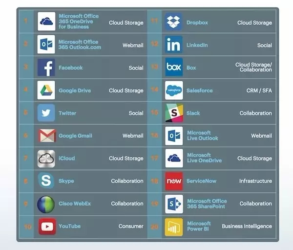
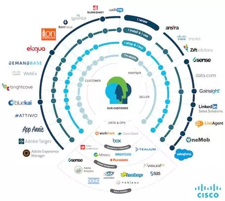
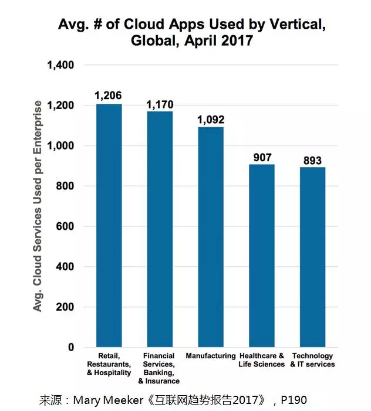
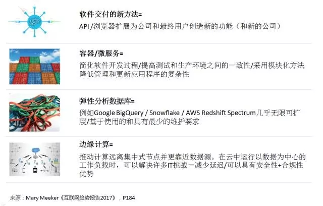
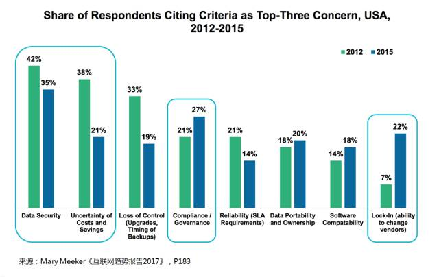

这些领域使用SaaS软件超过1000个，你看到机会了吗？【星河研究院】
2017-06-27来源：星河研究院
- 互联网女皇”玛丽·米克尔发布的2017年的互联网趋势报告中对云服务的描述有这样一组数据：在零售、餐饮、医疗、金融服务、银行、保险和制造业，平均每个企业使用的云服务数量已经超过了1000个。今天星河研究院将通过营销技术专家Scott Brinker的一篇文章，对云服务领域进行解读。
- Scott Brinker是营销技术领域内的意见领袖，创办了营销技术公司Ion Interactive，同时也是ChiefMarTec.com的主编。他发起的营销技术领域最具影响力的大会MarTech，每年都会发布一副全球MarTech生态图。
- 玛丽·米克尔今年的互联网趋势报告中，很多内容对营销领域都非常重要，包括语音平台、广告和商业的融合、游戏的创新、媒体的革新以及中国和印度的互联网爆炸，但今天我们要解读的数据来自她对“云”的分析以及其跨企业的加速变化。
- 报告第190页的这张图表，显示了企业在不同领域用到云服务的平均数量：营销类排在第一位，平均每个企业要使用91个营销类云服务，HR排在第二位，平均用了90个，第三位是协作类云服务，平均每家企业用了70个。
- 
- 虽然根据数据提供方——云安全提供商Netskope所指，“云服务”的定义相当广泛，包括Facebook、LinkedIn和Twitter等社交类服务，还包括协作类的Skype、Slack和WebEx，云存储中的Box、Dropbox和Google Drive，等等，但这些数字仍然非常惊人。
- 下图是Netskope通过研究得出的使用量最高的前20个云服务。虽然前20里面没有营销类的云服务，但是营销类的SaaS服务数不胜数，在Scott Brinker之前的“营销科技图谱2017”的介绍中，营销类的SaaS服务企业有上千家。
- 虽然它们中的很多并不是被大规模应用的基础性系统，但如果在某一方面非常好用，营销人员仍然会非常乐于使用。这也是为什么营销人员会同时使用这么多营销类云服务的原因之一。
- 
- 通过互联网趋势报告中的数据，我们得出了以下六点结论，请大家参考。
- ①
企业营销市场比你想象的大很多
- 
- 这个是今年早些时候Scott Brinker发布的思科内部经常使用的39个营销和协作常用的技术，当时已经被认为是太多了。但实际上平均每个企业已经使用了91个营销类云服务，思科的39个还算是比较保守的估计。
-
由于营销人员会主动使用工具去增加他们的效率，因此很有可能在他们自己都没有意识到的情况下就已经使用了大量的云服务／软件。“平均每个营销人员会使用超过100个软件／服务”这个目标应该会很快实现。
- ②
HR、财务等领域也会大量使用云服务
- 平均每个企业会使用到90个HR类的云服务，排名紧随营销类之后。协作类以70个排名第三，还有43个CRM／销售类服务和37个生产力相关的服务等等。
- 这说明营销人员采用云服务数量呈指数增长的原因只是因为他们喜欢“高大上”的服务显然是错误的刻板印象。正如之前所说，营销人员更有意愿去使用能真正提高其效率的工具，因此对于那些好用但受众面很窄的应用也是乐于接受的。
- 除了营销人员，那些关系到企业其他关键部门的人员自然也会使用与他们领域相关的服务，例如HR和财务／会计领域，批准假期和审批预算与营销同样重要。
- ③
企业使用的云服务总量达到1000种
- 
-
之前的数据是平均每个企业使用的细分领域的云服务的情况，上图是表示平均每个企业使用的各行业的云服务的情况。令人惊讶的是，平均每个企业使用的行业云服务数量已经达到千个的水平。因此我们可以看出，云端软件的应用程序的爆炸不仅仅是营销领域的特有现象，这已经是商业（甚至是生活中）的新常态。
- ④
现在的云软件是一个松散耦合的网络
- 如果你认为使用1000种不同的云服务的企业简直是不可思议的，那么你需要了解在云时代的“软件”（也即是我们经常说的SaaS）与传统的需要本地安装的软件在结构上已经有很大的不同。
现在的云软件已经不是大规模的单个应用，而是一个松散耦合的网络，数百个较小的服务正承担着以前传统软件的各种任务，而且没有传统软件的那种负担。这为企业提供了巨大的数字化敏捷性。
- 
- ⑤
云软件不应让企业感觉“被绑架”
- 这反映了企业对云软件的关注侧重点在过去五年中的改变。下图中的“Lock-in，锁定”，即是被服务提供商“绑架”，不得不做出改变，是2012年企业关注最少的点。但到了2015年，服务提供商的“锁定”则上升到企业所担忧的问题的第三位，排在了成本不确定性、失去控制、可靠性（SLA要求）和软件兼容性这些担忧之前。

- 在三年的时间里，其他的担忧是如何得到稳定的降低是非常值得关注的，同时，不被服务提供商“锁定”得到企业的如此重视也令人感到惊讶。
- 正如上面所说的，敏捷性和灵活性是企业采用云服务获得的最大的好处，这也就意味着企业越来越不愿意被传统的软件技术和合同所绑定。
- ⑥
新的安全和合规解决方案成创新机会
- 云服务能给企业带来前所未有的敏捷性和灵活性，但云服务不是没有问题。从2012年到2015年，云服务第一关注的就是数据安全。到2015年，合规和治理成为了企业排名第二位的担忧。
我们回头再看这个图表（下图），最后一列表示了云服务不是“企业可用”所占的比例，几乎都在90%以上。这意味着这些应用没有实现足够的控制来执行企业级安全和合规性要求，包括谁可以上传或下载数据、删除或更改纪录，以及这些活动如何审核和监控。
- 如果按这个数据排名，营销类云服务是第二差的，97%的服务未能达到企业级标准。同样令人大跌眼镜的是排名第一的竟然是IT服务／应用程序管理服务，最为信息化、数字化和云化程度最高的领域，竟然有98%的服务未达到企业级标准。
- 虽然围绕企业治理的文化也不得不随着云服务的发展而进行改变——指挥和控制层级结构已经在高速发展的网络世界中挣扎着改变，但在今天的云时代中仍有很大的风险服务环境需要解决。
- 这种新的安全和合规解决方案与云时代之前肯定会有很大不同，因此我们也看到这里有很多创新的机会。这是一个非常重要的问题而且亟待解决。